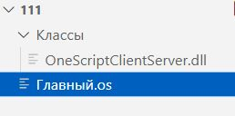
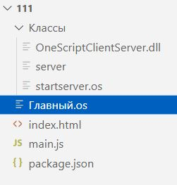

Декларативные формы задумывались как десктопное приложение на базе веб-технологий, со всеми возможностями движка Chrome. Изначально требования к приложению ставились следующие:
Кнопка1 = ДФ.Кнопка(); Кнопка1.Родитель = Форма1; Кнопка1.Текст = "Кнопка"; Кнопка1.Нажатие = ДФ.Действие(ЭтотОбъект, "Кнопка1_Нажатие");
В первую очередь это инструмент в помощь разработчикам на языке 1С. Используются два движка - OneScript и NW.JS.
OneScript повторяет синтаксис 1С, поэтому тем, кто с ним знаком дополнительно ничего изучать не нужно.
NW.JS обеспечивает кроссплатформенность, так как может создать окно программы с браузером в этом окне. Его изучать не нужно, механизм его работы и взаимодействия со сценарием скрыт внутри библиотеки декларативных форм.
Минимальные требования к устройству каталога Вашей программы при первом запуске показаны на рисунке ниже.
Имя стартового сценария не регламентируется. В этой справке стартовый сценарий будет называться Стартовый.os.
Содержимое файла Стартовый.os следующее:
ПодключитьВнешнююКомпоненту("ВашКаталогНаДиске\DeclarativeForms.dll");
ДФ = Новый ДекларативныеФормы();
ДФ.nwПуть = "C:\222\nwjs\nw.exe";
Форма1 = ДФ.Форма;
Форма1.Открыть();
Пути указаны с моего компьютера. Переменная ДФ.nwПуть указывают куда программе обратиться за движком NWJS.
Но можно упростить дело и поместить каталог NWJS рядом со стартовым скриптом.
После запуска Стартовый.os в каталог будут дозаписаны необходимые файлы и программа сразу начнет работать.
Дозаписаны будут файлы
index.html - стартовая страница-шаблон формы и
package.json - настройки для NWJS.
Без TCP сервера невозможна связь формы с нашим сценарием. Многопоточный TCP сервер внедрен в библиотеку декларативных форм и будет запущен автоматически в фоновом задании.
Код сценария сократится до:
ПодключитьВнешнююКомпоненту("ВашКаталогНаДиске\DeclarativeForms.dll");
ДФ = Новый ДекларативныеФормы();
Форма1 = ДФ.Форма;
Форма1.Открыть();
Подключить библиотеку можно так:
ПодключитьВнешнююКомпоненту("ВашКаталогНаДиске\DeclarativeForms.dll");
ДФ = Новый ДекларативныеФормы();
При создании объекта ДекларативныеФормы автоматически выполнится метод ДФ.ЗагрузитьСценарии(".\") и подключатся сценарии находящиеся в подкаталогах Классы и Модули. В подключенных сценариях будет доступна структура под именем ОбщаяСтруктура. И у ОбщаяСтруктура будет свойство с именем ДФ. Так что Вы можете в подключенном сценарии сразу обратиться к объекту ДекларативныеФормы так:
Сообщить("из сценария ОбщаяСтруктура.ДФ = " + ОбщаяСтруктура.ДФ);
После запуска стартового сценария откроется окно консоли и затем окно программы. Взаимодействовать они будут через запущенный фоновым заданием TCP сервер. Запуск TCP сервера производится автоматически. Корректное закрытие всех запущенных модулей - это закрытие окна программы. Это вызовет завершение работы и NW.JS и фонового TCP сервера и окна консоли.
Если закрыть только окно консоли это вызовет и завершение фонового TCP сервера, но окно программы останется открытым и может выдать сообщение о потере связи с сервером, после чего может автоматически закрыться. Возможно закрытия и не произойдет, зависит от кода программы. Следующий запуск стартового сценария будет успешным только после закрытия окна программы.
Избежать появление окна консоли совсем поможет разработка Запуск сценариев OneScript без окна консоли.
Декларативные формы выполнены в парадигме событийно-ориентированного программирования. С одной стороны у нас движок NW.JS, который по нашему плану создал окно с движком браузера Chromium в пределах окна. С другой стороны сценарий, работающий на движке OneScript. Связь между ними происходит посредством TCP сервера, запущенного фоновым процессом. При возникновении в форме события выполняется соответствующая функция из скрипта js в файле index.html. Функция формирует HTTP-запрос для TCP сервера. TCP сервер анализирует этот запрос, находит указанный обработчик в сценарии и выполняет его. Затем высылает клиенту ответ. В этом ответе в виде строки собраны все действия возникшие во время выполнения обработчика на стороне сценария. Действия эти представлены функциями с параметрами. Функции разделены уникальной последовательностью символов. Получив в ответ на HTTP-запрос строку с перечнем функций скрипт js в файле index.html выполняет их, что вызывает изменения в форме.
Строка ответа сервера может быть просмотрена в любое время, она доступна в свойстве ДекларативныеФормы.СтрокаФункций (DeclarativeForms.FunctionString). И её можно изменить, повлияв на ответ сервера по своему усмотрению.
Из всего этого ясно, что изменять форму в ответ на возникающие события мы можем только во время выполнения HTTP-запроса. Первый такой запрос производится при выполнении метода Форма.Открыть (Form.Open). До его запуска идет код создания объектов формы, задания свойств. Эти действия записываются в свойство ДекларативныеФормы.СтрокаФункций (DeclarativeForms.FunctionString). С запуском метода Форма.Открыть (Form.Open) NW.JS формирует окно и срабатывает событие загрузки страницы index.html. В этом событии посылается первый запрос на сервер. Сервер в ответе высылает строку ДекларативныеФормы.СтрокаФункций (DeclarativeForms.FunctionString) функции из которой выполняются друг за другом. Создаются объекты формы и устанавливаются их свойства.
Мы не можем изменять состояние формы непосредственно при каждом атомарном изменении свойств объектов в сценарии. Форма может только пакетом получить сделанные изменения и только в пределах выполнения обработчика события. Сервер закрывает соединение после отсылки ответа клиенту, иначе HTTP-запрос не будет получен клиентом. Было бы лучше иметь возможность влиять на состояние формы не только при обработке события, но и в произвольном месте сценария. Для этого средствами NW.JS в файле index.html создается TCP клиент. Он подключается к серверу и создает постоянный канал связи. При случайном или намеренном разрыве канал восстанавливается. По нему можно так же посылать форме имена функций с параметрами и делать это можно не в пределах обработчика события. Сообщение форме можно послать методом ДекларативныеФормы.СообщениеФорме (DeclarativeForms.MessageToForm).
ДФ.СообщениеФорме("mapKeyEl.get('" + Кнопка2.КлючЭлемента + "').style['backgroundColor'] = 'rgb(175, 238, 238)'");
Есть ограничение - такое возможно только после выполнения метода Форма.Открыть (Form.Open)
Так как TCP сервер многопоточный выполнение событий будет происходить не в линейном порядке отправки HTTP-запросов. Оно будет зависеть от алгоритма работы сервера и выполнение строгой очередности здесь не наблюдается.
В ОС Windows для связи формы со сценарием используется объект WebSocket. Создаются два соединения WebSocket, которые запускаются фоновыми заданиями. Одино из этих соединений работает на прием сообщений от формы, другое на отправку сообщений от сценария к форме. Благодаря использованию WebSocket стала возможной работа сценария в браузере, установленном в системе по умолчанию. То есть без помощи разработки NWJS. В остальном обработка событий соответствует описанной для ОС Linux.
Для всех свойств предусмотрена возможность установки различными способами.
Блок1.Стиль.Границы = ДФ.Границы(ДФ.ШиринаГраницы.Толстая, ДФ.СтильГраницы.Двойная, ДФ.Цвет(0, 0, 255));
// Так Блок1.Стиль.Границы = "thick solid #0000FF"; // или так Блок1.Стиль.Границы = "thick solid rgb(0, 0, 255)";
ДФ.cssПуть = "styles.css"; // фрагмент из styles.css // ... border: thick solid #0000FF; // ...
Размерность для числовых значений длины по умолчанию задается в пикселях (px). Если необходимо использовать другую размерность, примените для установки строковый тип указав любую другую размерность.
Блок1.Стиль.Верх = 48; // пиксели Блок1.Стиль.Верх = "2cm"; // сантиметры // ...
Этот прием действует для всех свойств имеющих размерность.
Иногда внешний вид элементов выглядит не так, как задумывает программист. Могут быть ограничены возможности движка браузера, используемого NWJS.
В этом случае можно изменить внешний вид элемента, описав его в файле стилей css. Пример приведен в справке в разделе -Дополнения -Анимация куба. Изменен внешний вид объектов Ползунок (Range).
Установив свойство ДекларативныеФормы.ОткрытьВБраузере (DeclarativeForms.OpenInBrowser) в значение Истина можно запустить формы в окне установленного в системе по умолчанию браузера. В этом случае нет необходимости в каталоге с NWJS, но функционал будет немного уменьшен. Это применимо только для ОС Windows.
.